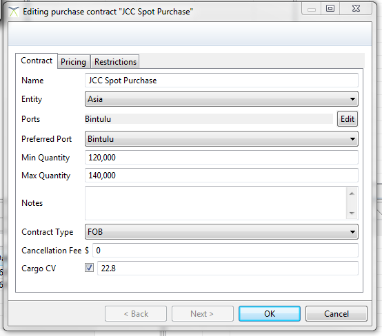

Purchases and Sales contracts can be managed in the “Commercial” tab of the editor. New simple contracts can be added using the green plus icon. Custom contracts cannot be added this way and need to be pre-loaded into a scenario.
Purchase and Sales contracts are generally similar, although they do have a couple of unique attributes.

The next contract editor is split into three tabs: Contract, Pricing and Restrictions.
The pricing tab is specific to the type of contract. By default LiNGO ships with a price expression contract. This type of contract has a text field where simple expressions based around market curves can be defined. E.g. 99% HH+0.5 means take 99% of HH curve price and add 50 cents (assuming the HH curve is in dollars). More complex contracts can have many other fields specific to that implementation.
The Contract tab contains various general information about the contract, while the Restrictions tabs allows for restrictions on transactions at the “other end” of the trade by port, contract or other characteristics.